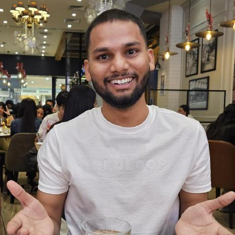

3D Printing Workshop for Medical Devices, Simulation and Innovation
I attended this workshop in New Delhi. It was supported by ICMR and organized by COE-AIIMS+IITD at the India International Centre.
My Academic Profile
I use this page to share my workshops, hands-on training programs, and international conference participation.

Overview
Here I have highlighted my recent academic engagements, including technical workshops, specialized research training, and conference presentations across materials science and computational research.
Workshops
I attended this workshop in New Delhi. It was supported by ICMR and organized by COE-AIIMS+IITD at the India International Centre.
I participated in this hands-on workshop conducted at the Central Research Facility and SAATHI, IIT Delhi.
I completed this hands-on training hosted by the Central Research Facility and SAATHI Foundation at the IIT Delhi Sonipat Campus.
I joined this online hands-on training focused on density functional theory using Quantum ESPRESSO, organized by the Centre for Advanced Computational Research, New Delhi.
International Conferences
2025
I presented at this conference hosted by Madan Mohan Malaviya University of Technology and received the 3rd Best Presenter Award among an international pool of participants.
December 15-17, 2025
I participated in this conference at the Indian Institute of Science (IISc), Bengaluru.